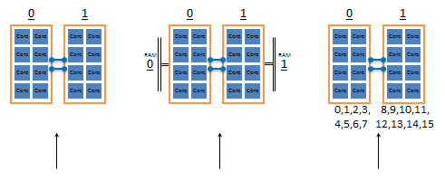
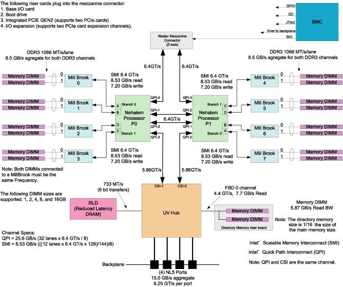

[NOTE] Updated March 14, 2019. This article may have outdated content or subject matter.
0x00 CCC
单个不够，数量来凑，太多人跑也会不规划好跑道容易干架；使用 Linux 软件 numactl 将服务进程绑定在目标 CPU 上，支持按 Vcore、物理 CPU 绑定。

0x01 numactl
numactl –show
查看当前调度策略，主要看 policy & preferred node
1
2
3
4
5
6
|
policy: default
preferred node: current
physcpubind: 0 1 2 3 4 5 6 7 8 9 10 11 12 13 14 15 16 17 18 19 20 21 22 23 24 25 26 27 28 29 30 31 32 33 34 35 36 37 38 39
cpubind: 0 1
nodebind: 0 1
membind: 0 1
|
numactl –hardware 可以看到该服务器 CPU 插槽数量、计算核心信息、CPU & RAM 亲和关系
1
2
3
4
5
6
7
8
9
10
11
|
available: 2 nodes (0-1)
node 0 cpus: 0 2 4 6 8 10 12 14 16 18 20 22 24 26 28 30 32 34 36 38
node 0 size: 98210 MB
node 0 free: 22647 MB
node 1 cpus: 1 3 5 7 9 11 13 15 17 19 21 23 25 27 29 31 33 35 37 39
node 1 size: 98304 MB
node 1 free: 38192 MB
node distances:
node 0 1
0: 10 21
1: 21 10
|
numactl –physcpubind=1,2,3,4 / –physcpubind=1-4 / –physcpubind=1,2-6,7-8 ${program}
此处填写的是 numactl –hardware 中看见的 node cpus，也就是 0 - 39 这些数字
1
2
3
|
exec numactl --physcpubind=39 bin/tidb-server \
-P 4444 \
--status="14080"
|
numactl –cpunodebind=0 / –cpunodebind=1
此处填写的是 numactl –hardware 中看见的 nodes ，也就是 0 - 1 ，该服务器只有两个物理 CPU
使用 cpu node bind 时，需要配合 –membind=0 / 1 使用，在硬件物理上做到亲和性调优
1
2
3
|
exec env GODEBUG=madvdontneed=1 numactl --cpunodebind=0 --membind=0 bin/tidb-server \
-P 4444 \
--status="14080"
|
不建议使用 –localalloc 锁定内存参数，该参数一般配合 –preferred （预分配内存）
亲和性
图片引用 Chapter 5. Data Placement Tools
双 CPU 服务器配合 8 条内存，单个 CPU 直系亲属为 4 条，分派 CPU 左右；隔壁 4 条内存可以通过共享使用。 cpu node bind = 1 、mem bind = 0 ，此时 cpu 使用内存时就要去邻居家才能用得到。

0x02 numastat
1
2
3
4
5
6
7
8
|
[tmpuser@jumphost scripts]$ numastat
node0 node1
numa_hit 1723819933 1011464781
numa_miss 0 0
numa_foreign 0 0
interleave_hit 60914 60922
local_node 1723800894 1011407642
other_node 19039 57139
|
miss 值和 foreign 值越高，就要考虑绑定的问题
| l |
r |
| numa_hit |
为这个节点成功的分配尝试数 |
| numa_miss |
把内存访问分配到另一个 Node 节点的内存大小，这个值和另一个 Node 的 numa_foreign 相对应。 |
| numa_foreign |
另一个 Node 访问我的内存大小，与对方 Node 的 numa_miss 相对应 |
| interleave_hit |
成功分配给这个节点的尝试交错策略数 |
| local_node |
这个节点的进程成功在这个节点上分配内存访问的大小 |
| other_node |
这个节点的进程在其它节点上分配的内存访问大小 |
numastat -m
显示每个节点中，系统范围内使用内存的情况
1
2
3
4
5
6
7
8
9
10
11
12
13
14
15
16
17
18
19
20
21
22
23
24
25
26
27
28
29
30
31
32
33
34
|
[tmpuser@jumphost scripts]$ numastat -m
Per-node system memory usage (in MBs):
Node 0 Node 1 Total
--------------- --------------- ---------------
MemTotal 98210.35 98304.00 196514.35
MemFree 22488.77 38474.79 60963.56
MemUsed 75721.59 59829.21 135550.79
Active 50895.23 37680.84 88576.07
Inactive 17754.17 15100.92 32855.09
Active(anon) 8650.44 4834.63 13485.07
Inactive(anon) 943.71 442.16 1385.87
Active(file) 42244.79 32846.21 75091.00
Inactive(file) 16810.46 14658.76 31469.22
Unevictable 0.00 0.00 0.00
Mlocked 0.00 0.00 0.00
Dirty 0.10 0.25 0.35
Writeback 0.00 0.00 0.00
FilePages 61853.27 48834.27 110687.54
Mapped 129.42 195.33 324.75
AnonPages 6796.43 3947.70 10744.13
Shmem 2798.00 1329.29 4127.30
KernelStack 48.03 46.22 94.25
PageTables 82.55 73.25 155.80
NFS_Unstable 0.00 0.00 0.00
Bounce 0.00 0.00 0.00
WritebackTmp 0.00 0.00 0.00
Slab 4346.52 4646.79 8993.30
SReclaimable 3976.43 4234.94 8211.37
SUnreclaim 370.09 411.84 781.93
AnonHugePages 5438.00 2968.00 8406.00
HugePages_Total 0.00 0.00 0.00
HugePages_Free 0.00 0.00 0.00
HugePages_Surp 0.00 0.00 0.00
|
numastat -p PID
将 tidb-server 绑定到 cpus 39 上的效果【cpu1 的最后一个核心】
1
2
3
4
5
6
7
8
9
10
11
|
[tmpuser@jumphost scripts]$ numastat -p PID
Per-node process memory usage (in MBs) for PID 8059 (tidb-server)
Node 0 Node 1 Total
--------------- --------------- ---------------
Huge 0.00 0.00 0.00
Heap 0.00 0.01 0.01
Stack 0.00 0.02 0.02
Private 0.01 58.82 58.83
---------------- --------------- --------------- ---------------
Total 0.01 58.84 58.86
|
0x03 taskset
针对当前已经运行的进程操作 cpubind
1
2
3
4
5
6
7
8
9
|
[tmpuser@jumphost scripts]$ taskset -p 8059
pid 8059's current affinity mask: 8000000000
[tmpuser@jumphost scripts]$ taskset -pc 36,38 8059
pid 8059's current affinity list: 39
pid 8059's new affinity list: 36,38
[tmpuser@jumphost scripts]$ taskset -p 8059
pid 8059's current affinity mask: 5000000000
|
Author
Jeff
LastMod
2019-03-14
License
CC BY-NC-ND 4.0 ｜ 本文不带任何官方色彩，最终解释权归本站所有